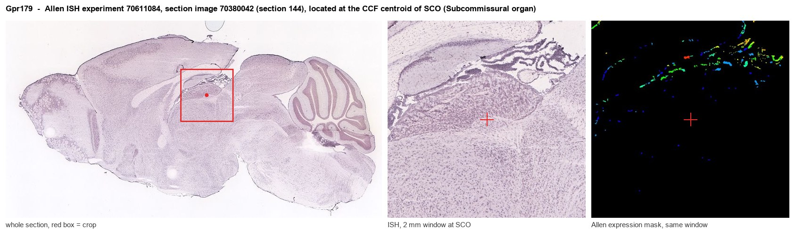
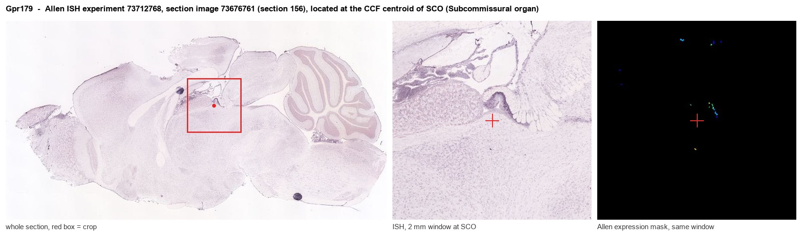
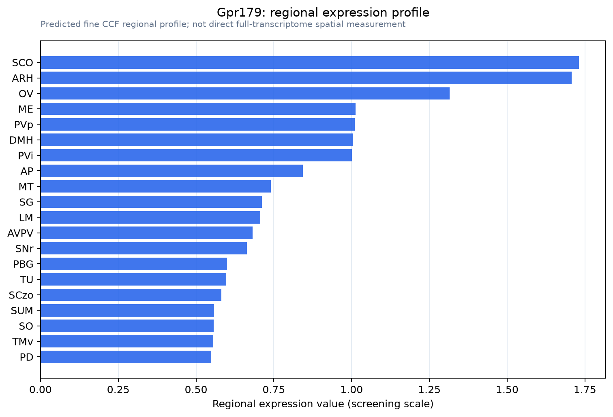

Gpr179
G protein-coupled receptor 179
Spatial tier: RESTRICTED · Class: GPCR · Top region: SCO (Subcommissural organ) · Positive regions: 16/554
Function in SCO: evidence, prediction, innovation
- Gene function
- Gpr179 encodes an orphan class C GPCR that works as a molecular scaffold rather than a conventional signalling receptor. At the dendritic tips of retinal ON-bipolar cells it anchors RGS7/RGS11-Gbeta5 complexes and nyctalopin to the mGluR6-TRPM1 cascade, making light responses fast and sensitive. Human mutations cause complete congenital stationary night blindness.
- Region function
- The subcommissural organ is a tiny ependymal secretory gland at the entrance of the cerebral aqueduct beneath the posterior commissure; it releases SCO-spondin into the CSF, where it condenses into Reissner's fibre, and its failure causes aqueductal stenosis and hydrocephalus.
- Published in this region
- inferred No region-specific literature found. Every characterised function of GPR179 is retinal: macromolecular complex formation with RGS proteins in ON-bipolar dendrites (Orlandi 2013), ultrastructural localisation and CSNB1 mutant analysis (Klooster 2013), a requirement for high mGluR6-cascade sensitivity (Ray 2014), a myopia phenotype in Gpr179 mutants (Wilmet 2022) and a recent cryo-EM structure (Yun 2024). No SCO or ependymal expression has been described.
- Predicted function
- Prediction: GPR179's established job is to nucleate an RGS-Gbeta5 signalling scaffold at a specialised apical membrane, so in the SCO it would most plausibly organise G-protein signalling complexes in the apical or ciliary membrane of secretory ependymocytes rather than transduce a diffusible ligand. Given the severe but purely retinal phenotype of Gpr179 mutant mice, a knockout is predicted to leave SCO secretion and CSF dynamics intact; the sensible first step is RNAscope validation, since low-abundance or cross-hybridising signal is a real possibility for this small structure.
- Innovation
- ★★★☆☆ 3/5 The gene is well studied but only in retina, so an extra-retinal site would be novel, though the SCO assignment is as likely to be an artefact as a discovery.
- Tools
- Gpr179 nob5 mutant and Gpr179 knockout mice from the CSNB and myopia literature; anti-GPR179 antibodies validated in retina; FoxJ1-CreER (JAX 027012) for ependymal manipulation; no ligand, agonist or driver line.
- References
Direct evidence located at the region

Allen ISH experiment 70611084, section image 70380042 (section 144): the section that contains the CCF centroid of Subcommissural organ according to the Allen image-to-atlas alignment (reference_to_image), with a 2 mm window around that point. Left: whole section, red box = window. Middle: ISH signal. Right: Allen's expression-mask view of the same window. open this image in the Allen viewer

Allen ISH experiment 73712768, section image 73676761 (section 156): the section that contains the CCF centroid of Subcommissural organ according to the Allen image-to-atlas alignment (reference_to_image), with a 2 mm window around that point. Left: whole section, red box = window. Middle: ISH signal. Right: Allen's expression-mask view of the same window. open this image in the Allen viewer
Direct spatial evidence

Regional expression figure

Predicted WMB × fine-CCF profile; not direct full-transcriptome spatial measurement.
Spatial profile
Evidence and specificity
- Evidence status
- PREDICTED_FINE
- Direct sources
- None; predicted localization only
- Exclusive threshold
- 12 positive regions out of 554
- Spatial specificity
- 0.319
- Top-region fraction
- 0.067
- Filter status
- PASS
Interpretation limits
- Cell-type-to-region projection is imputed expression, not direct spatial measurement.
- Adult reference atlases do not establish stability across age, sex, strain, state, or disease.
- Transcript abundance does not guarantee protein abundance or genetic-tool performance.